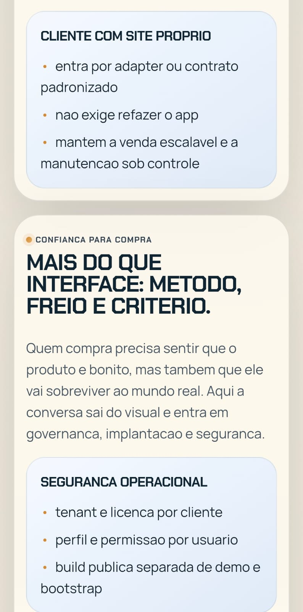
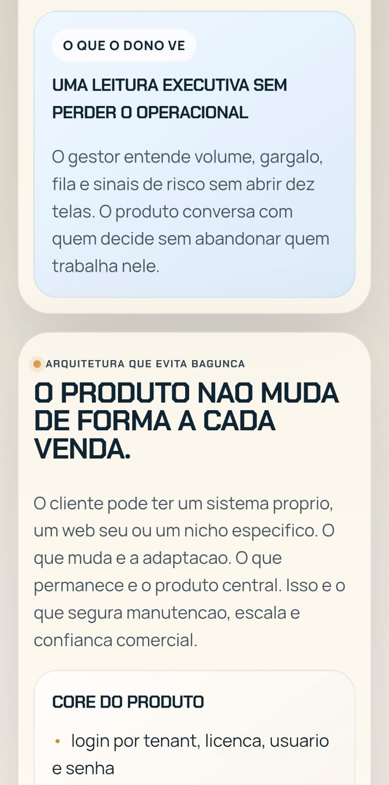
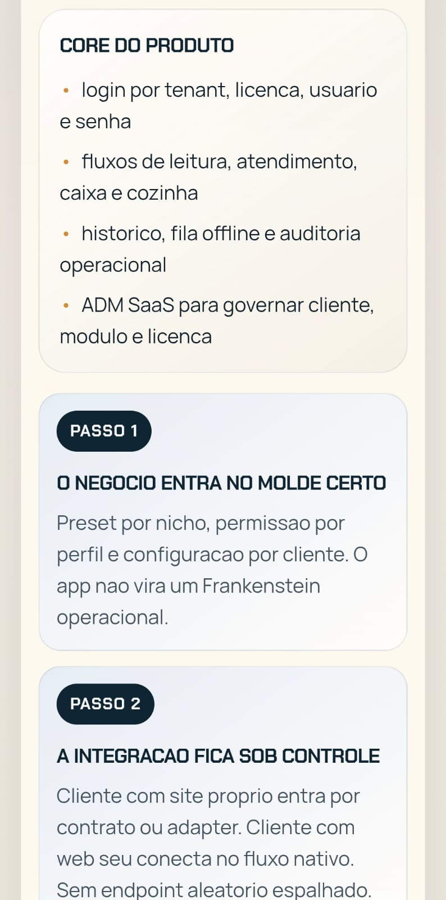

AMORIM PDV MOBILE
Mobilidade operacional vendável, com identidade própria e implantação sem gambiarra.
Um módulo central para leitura, atendimento, caixa, cozinha e governança, com adaptação controlada por cliente sem dissolver a identidade do produto.
Produto fixo
Não nasce um app novo a cada cliente.
Integração sob critério
Contrato e adapter no lugar de exceção solta.
Operação por contexto
Cada perfil vê só o que precisa operar.
O argumento de compra
- parece produto governado, não projeto remendado
- reduz risco para quem compra e para quem implanta
- mantém caixa, cozinha e dono na mesma leitura
Tese
O melhor caminho é vender mobilidade com critério, não app por cliente. Isso protege manutenção, implantação, escala e previsibilidade comercial.
Arquitetura que evita bagunça
- login por tenant, licença, usuário e senha
- fluxos de leitura, atendimento, caixa e cozinha
- histórico, fila offline e auditoria operacional
- ADM SaaS para governar cliente, módulo e licença
Confiança para compra
- tenant e licença por cliente
- perfil e permissão por usuário
- build pública separada de demo e bootstrap
- implantação guiada com homologação obrigatória
Prova visual

Recortes de apoio


Onde entra melhor
- operação food com caixa, salão e cozinha
- varejo leve com leitura, balcão e fluxo rápido
- cliente com sistema próprio via contrato ou adapter
Método de entrega
- diagnóstico e enquadramento do cliente
- condição comercial separada da operação
- homologação, go-live e estabilização inicial
Venda mobilidade com critério
Produto reconhecível, governança clara, integração sob contrato e implantação repetível. O app entra onde faz sentido sem dissolver a identidade do ecossistema.